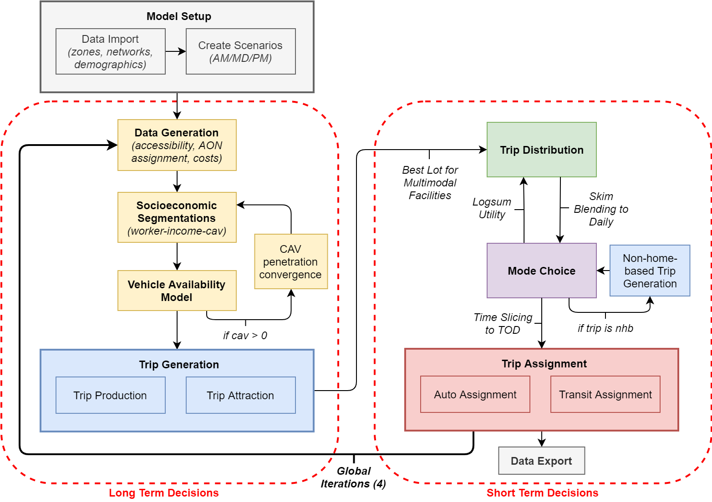
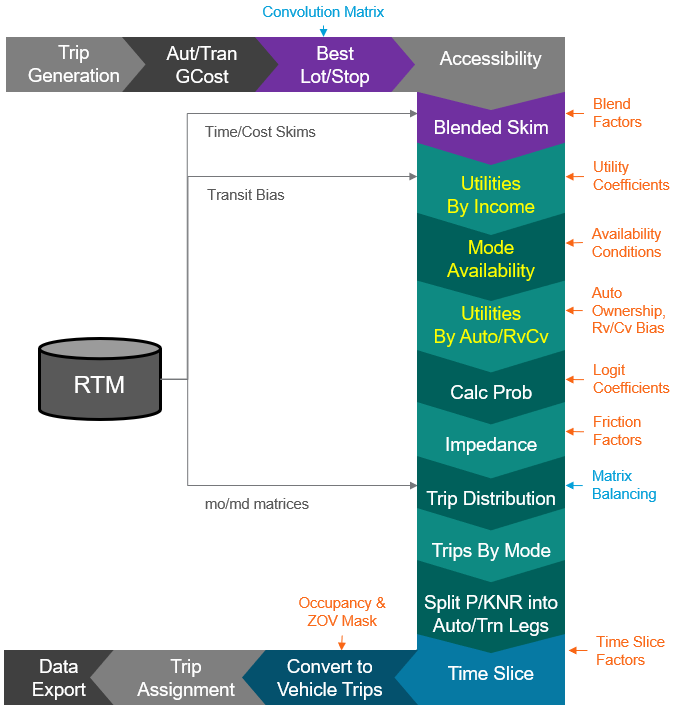
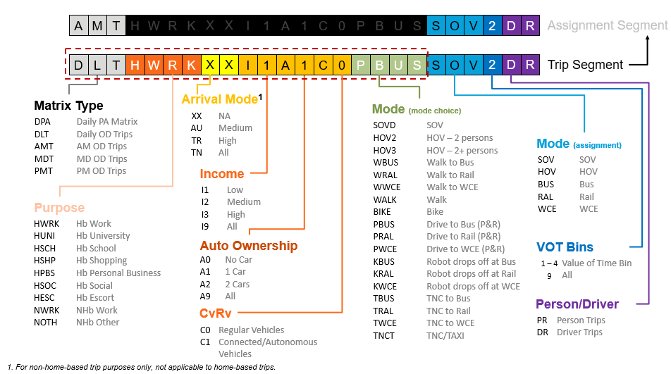
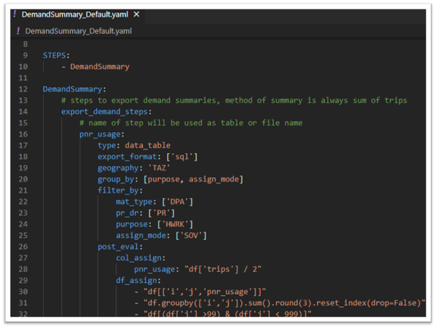
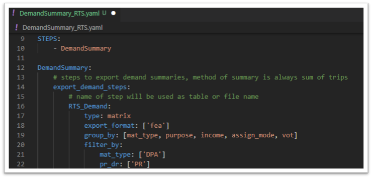

Advanced Inputs¶
Advanced inputs are enabled for most of mode choice in the RTM. This allows modelers to update the mode choice model, household segmentations for assignment, and update time slicing definitions.
Model Structure¶
The RTM is an advanced four step transportation model comprise of trip generation, trip distribution, mode choice, and trip assignment.

Some elements within the RTM framework are programmable through advanced inputs using a set of yaml configuration files and input data.

Components labeled in grey - trip attraction, trip production, generalized cost and accessibility calculations, trip assignment, and data export - cannot be modified using advanced inputs. If you need to reprogram those components of the RTM, proficiency with EMME toolbox and Python is required.
Configurations¶
Settings to advanced input modules can be modified via the input files inside the RTM/BaseNetworks/Inputs folder. The input folder content copied to the run, then it is loaded at the run level. This makes it possible to modify model specifications that are part of the advanced inputs at the run level for the RTM.
Folder Structures¶
RTM/
├── BaseNetworks/
│ └── Inputs/
│ ├── BestStop/
│ ├── ModeChoice/
│ └── TimeSlicing/
│
├── ...
└── RTM.emp
There are three subfolders relevant to the advanced input modules: BestStop, ModeChoice, and TimeSlicing. Under each subfolder, there are yaml files for major modules such as ComputeBestLot.yaml, Blended_Skim.yaml, TimeSlicing.yaml, UtilityByPurpose/HWRK.yaml, etc. The yaml files require input files in csv or binary data format depending on the procedures relevant in each module.
Yaml Files¶
The Yaml configuration file for RTM advanced inputs have three major sections: Files, Steps, and Functional Parameters. The Files section provides input and output files locations. The Steps section provides a list of function calls that are made in python. Finally, the Functional Parameters section provide a list of parameter values relevant to each function call. An Example of yaml file for best lot calculations can be found below:
# Compute Best Lot Input Files
FILES:
INPUTS:
COST: BestStop/ComputeBestLot_Cost.csv
AVAILABLE_LOT: BestStop/ComputeBestLot_Lot.csv
OUTPUTS:
BEST_LOT: BestStop/BestLot.fea
# Blended Skim Steps: Each Step is a Function
STEPS:
- get_best_lots
get_best_lots:
Target_Column: Target
Available_Lot_Column: Available_Lot
Costij_Column: Costij
Costjk_Column: Costjk
Note
Adding additional steps will require changes be made in python. Changing input and output file values as well as functional parameter values can be done directly with the yaml file.
Input Files¶
Flat Files¶
Flat files are used for specifying matrices used in calculations. The matrices specify can be input, output (or intermediate) matrices depending on the context of the flat file being used. For more information on a specific flat input file, please refer to the flat file in the context of the yaml file and relevant step in the model flow.
Note
Intermediate matrices are generally stored as binary files. It can be the output of an upstream module that becomes the input of a downstream module.
Binary Files¶
Binary files are often used for serialized input data or intermediate data storage. Binary files are not designed to be read by users, and they are typically cleaned up after a full model run. The current binary data format being used the the RTM is feather. Since the deserialization of binary file depends on the version of the data format implemented, there is no guarantee that these data files are backward or forward compatible; therefore, binary files are intended only for transient data and are not used for permanent data storage.
Compute Best Lot¶
The Compute Best Lot step generates matrices used in evaluating the optimal cost of intermodal trips. From a list of eligible zones (j), the compute best lot algorithm builds a list of total cost from i to j to k, then find the best cost for every i to k pair via the optimal j lot. This procedure requires the following inputs, as identified in ComputeBestLot.yaml:
- AVAILABLE_LOT (default:
Inputs/BestStop/ComputeBestLot_Cost.csv) - a list of intermediate lots available for each horizon year.- Each lot type is delimited by comma which is then further delimited by semicolon, for example for year 2017,
gn1;gn3,gn1;gn3,gn1;gn3corresponds to PNR_Lot ofgn1andgn3, KNR_Lot ofgn1andgn3, TNCNR_Lot ofgn1andgn3. - Add new columns if additional lots are needed.
- Each lot type is delimited by comma which is then further delimited by semicolon, for example for year 2017,
- COST (default:
BestStop/ComputeBestLot_Lot.csv) - specification of cost for matrix calculation.- The cost is calculated by the optimizing the total cost of
Costij_ColumnandCostjk_Columnusing a convolution algorithm. The minimum cost for an optimal lot is the result of the computation. - Variable is assigned to new matrix name defined by
Target_Column. The variables are specified by row. - The lot type is defined by shared column name for
Available_Lot_Column. - A specific mode for each leg of the cost need to be specified also with
ModeijandModejk. - Add more rows for additional cost that need to be computed.
- The cost is calculated by the optimizing the total cost of
Blended Skim¶
Skim blending further prepares data required for mode choice after best lot computation. Skim blending is the process of producing daily cost from peak hour scenarios, using a set of blending factor. The skim blending process first build daily cost from simple expressions (if applicable). Then, it adds all the peak hour components multiplied by corresponding factors. Finally, adjustments are made for intermodal variables requiring cost from best lot calculations. There are three required file inputs, which can be found in Blended_Skim.yaml:
- SPEC (default:
ModeChoice/Blended_Skim.csv) - path to csv file containing the list of skims (or expressions) associated with blending factors, segmentations, and associated trip purpose. - COEFFICIENTS (default:
ModeChoice/Blended_Skim_Coeffs.csv) - path to csv file containing all blending factors that are referenced by the SPEC file. Typically, the blending factors are time of day and production-attraction (PA) specific. - BEST_LOT (default:
BestStop/BestLot.fea, leave as default) - the intermediate binary data file output from the compute best lot calculation.
In addition to file inputs that provide the required data for skim blending, a structure of the blending procedure needs to be specifed in the YAML file under the Blending setting:
- Target_Column - the name of the maxtrix which the result of the skim blending calculation to be stored.
- Key_Column - the name of the factor that will be applied to perform skim blending.
- Seg_Column - the list of columns containing segmentation.
- Factors - outlines the structure of blending factor that corresponds to the data provided in COEFFICIENTS input. The columns in P-A or A-P will be multiplied by columns in Skims_Columns when calculating each skim blending variable.
- Skims_Columns - the list of columns with time of day scenario skims.
- Expresstion_Column - instead of Skim Columns by time period, an expression may be specified for all time periods. For example,
np.transpose(df['prtrmt'])for transposed vector matrices of park and ride terminal time.
Mode Choice By Purpose¶
Trip Purposes¶
The mode choice module computes the trips from production to attraction zones, and prepares the model data for time slicing, and subsequently, trip assignment. There is a total of nine trip purposes modeled, each have a separate mode choice model structure:
- Home-based Work - settings in
ModeChoice/UtilityByPurpose/HWRK.yaml - Home-based University - settings in
ModeChoice/UtilityByPurpose/HUNI.yaml - Home-based School - settings in
ModeChoice/UtilityByPurpose/HSCH.yaml - Home-based Escorting - settings in
ModeChoice/UtilityByPurpose/HESC.yaml - Home-based Shopping - settings in
ModeChoice/UtilityByPurpose/HSHP.yaml - Home-based Social - settings in
ModeChoice/UtilityByPurpose/HSOC.yaml - Home-based Personal Business - settings in
ModeChoice/UtilityByPurpose/HPBS.yaml - Non-home-based Work - settings in
ModeChoice/UtilityByPurpose/NWRK.yaml - Non-home-based Other - settings in
ModeChoice/UtilityByPurpose/NOTH.yaml
In order to compute trip demand by purpose and by mode, utility, probability, trip distribution, trip demand, and accessibility calculation were performed. These steps are outlined in detail in the following sub sections.
Nhb Trip Generations¶
Newer RTM releases use the attraction of home-based trips as production of non-home-based trips. As such, a custom trip generation needs to be performed at the beginning of each non-home-based mode, after all the home-based models are computed. This procedure is called NonHomeBased_TripGen and are appended to STEPS for NWRK.yaml and NOTH.yaml.
Utility¶
The utilities of available modes are based on mode availability and cost. The global mode availabilities are defined in AVAILCONDITION and AVAILCHECK. The AVAILCONDITION csv file defines all the availability tests performed to establish the availability conditions. There will often be more than 1 condition per each mode's availability. The AVAILCHECK csv file establish mode availability by segmentation. Availability parameters can vary across trip purposes and are specifried in ComputeUtil:Availability. Segmentations are often different across trip purpose and are specified in ComputeUtil:SEGMENTS.
The mode choice utility calculation for unavailable modes are masked with a large negative value (-99999). For available choices, the utility of each sub-mode is calculated based on the mode choice utility functions, specified by a set of csvs:
SPEC(i.e.:HWRK.csv) - a list of cost with expression and coefficients, by default, these costs are grouped into variables and are further defined byCOEFFICIENTSandSEGMENTS.COEFFICIENTS(i.e.:HWRK_Coeffs.csv) - a list of coefficient variable and values.SEGMENTS(i.e.:HWRK_Segments.csv) - segment specific values and coefficient for utility computation.MATRIXDATA(i.e.:HWRK_MatrixData.csv) - a list of matrices by mode to be prepared for utility calculations. They should be specified if they are used as a variable, so they are ready to be used.
Probability¶
After utility calculations, the choice probability for each mode is calculated based on theta and nesting strcture defined in CalcProb:NESTS within each yaml file. The list of alternatives at the lowest nesting level must match the name of the modes in Util_Data_Mode_Group.
Trip Distribution¶
Trip distribution is performed based on balncing type and impedance function defined for the trip purpose. Depending on the tirp purpose, different balancing types such as two_dim_matrix_balancing and one_dim_matrix_balancing can be specified. The impedance is based on calculation with K-factor (Kij) and needs to be specified in the DISTRIBUTIONIMP csv file. The impedance function may vary by segmentation and by modes.
Trip Demand¶
Although the mode choice trips can have very detailed segmentation and sub-modes, for the purpose of network assignment, the trips need to be aggregated and separated into different networks, mainly auto network, transit network, and active network. The TNC or Taxi network may be available depending on the availability of those modes. The trip demand calculation varies by trip purpose and can be specifed in TripsByMode within each yaml file.
Accessibility¶
The accessibility calculation is a post-processing routine that produce logsum accessibility measures that can be useful for preliminary analysis of user benefits. The ComputeAccessibility:Logsum_Coeff for each trip purpose should correspond to the top level theta for that mode choice model. And the specific modes used in accessibility calculation can be specified within ComputeAccessibility:Accessibility_Modes. The group of modes specified here do not need to reflect mode choice nesting structure and are provided here for reporting purposes.
Time Slicing¶
Time slicing is required to split daily trips into multiple time of day so the trip demand results can be feed back into the model for network assignment. Specification for time slicing can be found in Input/TimeSlicing/TimeSlicing.yaml
In order to perform time slicing, the production-attraction (PA) trips need to be split into multimodal legs and into specific assignment classes, as specified in the MULTIMODAL_LEGS csv. Using the best lot computation results, the multimodal trip travel times are built.
If zero-occupancy vehicles are present, the trip matrices will be adjusted accordingly. For high-occupancy modes like HOV, transit, and TNCs, occupancy adjustments will be made. Finally, the time slicing factors then need to be applied to the adjusted daily trips.
Load PA Trips¶
The first step in time slicing, all the PA trip matrices are read and loaded into memory. Matrices are tracked by the mode choice module using a trips_dict data object internally. If certain matrices are missing from utility calculation (for example, it has not been entered into the calculation or didn't exist from previous runs), an error will be raised. Missing matrices must be addressed before time slicing can be completed.
Sub Modes Splits¶
Typically, demands for different mode of transport are calculated as part of mode choice; however, certain sub modes are not modeled explicitly in the mode choice model due to some underlying assumptions about the behavior of those sub modes.
For example, for home-based escorting trips, we do not explicitly model SOV, HOV2 and HOV3 like we do for home-based work trips. This is due to the joint decision at the household level for escorting trip, which is not modeled in the RTM. So, we establish an assumption that the occupancy for escorting trips is similar to what we observed in our household travel survey.
Multimodal Trip Split¶
Trips using multiple modes are modeled as single multimodal trips throughout mode choice. In order to properly assign those trips onto the road and transit network, the multimodal trips need to be split into trip legs, with their appripriate intermediate transit or parking facility assigned. Definition for multimodal trips is specified as rows in a CSV file from the MULTIMODAL_LEGS setting under FILES/INPUTS. This step also requires BEST_LOT results to be specified as an input in the TimeSlicing.yaml.
Assignment Modes¶
Modes used by mode choice often occupany the same network and belong to the same assignment class (most notably the HOV modes). These matrix names of each of the mode choice demand are updated to include information regarding the mode's assignment class. This allows groups of matrices belonging to the same assignment class be retrieved during time slicing.
Factors¶
Time slicing factors and their corresponding ensembles (i.e.: ga, gb, gc ensembles) are read and processed. A min_val should be specified to fill in any missing value after merging the ensemble and factor tables.
ZOV Mask¶
If Connected and Autonomous Vehicle (CAVs) is enabled in the RTM, Zero Occupancy Vehicles (ZOVs) will need to be generated in the network for trips performed by the CAVs without any occupants. The RTM models the decision to park versus drive home the CAVs as a trade off between parking cost and driving cost. Users may specify the cost matrices and parking cost information under CalculateZOVMask in TimeSlicing.yaml.
Occupancy¶
In RTM, PA trips in trip generation, distribution and mode choice are modeled as person trips while assignment trips are modeled as vehicle trips for the auto network and person trips for the transit network. Therefore, occupancy is an important prerequisite to time slicing calculations. This step allows users to define scalar or matrices for occupancy and generate occupancy_dict that will be used in time slicing to process trips with HOV assignment class (assign_mode) and corresponding Mode Choice modes (mc_mode).
Time Slice¶
The TimeSlice function is the main step in producing time slicing results for assignment. The time slicing procedure first split the daily trips into time of day trips (i.e. AM, MD, PM) using time_of_day_factors. Then, it converts person trip to driver trip using occupancy by mode choice modes, which is then stored as matrices by demand segments.
To generate the ZOV trips, ZOV mask by TAZs, which represent the propensity for the CAV to drive home instead of parking, is applied to the ZOV demand and are assigned to the driver segment.
To get OD trips, the time slicing factors is applied to all PA trips to get OD demand by time of day, by trip purpose, by mode, and by assignment class. Finally, all trips are aggregated and generated by assignment class. If TNC is being modeled, it will be added as a separate assignment class.
Segment disaggregation¶
The RTM uses a paramterized naming convention throughout time slicing. To specify this, users may modify the segment_disaggregation definition under TimeSlice. To define a segment, the start and end character index, and disaggreation criteria (char_start, char_end, disaggregation) need to be entered. For example, assign_mode: 19, 22, True means the segment assign_mode need to be aggregated over the matrix name character index [19, 22), 19th character to 21st character. Then, the segment is to remain disaggregated.
If the disaggreation criteria is False, then the segment would become aggregated for time slicing. Users may also filter by segments. For example, mat_type: 0, 3, AMT, MDT, PMT will keep mat_type segment disaggregated but only process segment AMT, MDT, PMT (processed as a list). If daily trips or other time period trips are present, they will be ignored. For more detail on naming conventions related to segment_disaggregation, refer to the figure below.

Demand Summary¶
With the introduction of more flexible segment disaggregation, users now have control over how to aggregate demand matrices by adjusting settings in TimeSlice step (segment_daily_demand, segment_tod_demand) within TimeSlicing.yaml. The Demand Summary yaml allows user to have additional control over how the aggregated demand matrices are summarized, as well as different format of export.
Multiple Demand Summary yaml can be implemented using DemandSummary_*.yaml file pattern. For example, user may add a project specific Demand Summary yaml like DemandSummary_prjectA.yaml in addition to DemandSummary_Default.yaml within the Inputs/TimeSlice input data folder. At model run time, all of the Demand Summary yaml will be executed. To specify custom Demand Summary, refer to default Demand Summary yaml and comments for instruction. Here are the fields you may modify to generate custom Demand Summary outputs:
- Data type: matrix or data_table
- Export format
- sql: save to trip_summaries.db
- csv: comma separated text file
- fea: Dataframe as feather
- emx: emme matrices – matrix only
- Group by:
- segmentations to keep, i.e.: [mat_type, purpose, assign_mode]
- Filter by:
- List of attribute values to include
- Geography:
- gy, TAZ, i or j – data_table only
- Post eval:
- col or df operations – data_table only
Example of snippet of default Demand Summary yaml: 
Example of snippet of a project based Demand Summary yaml: 